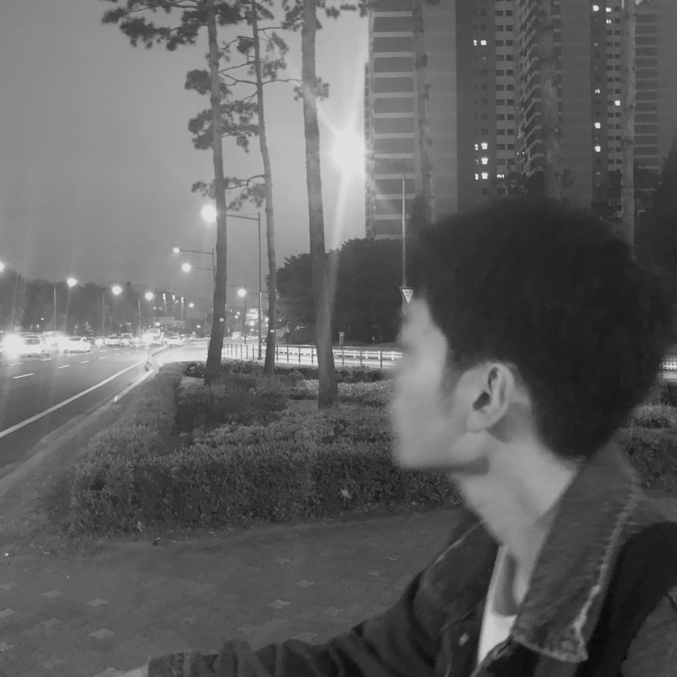

-

상우
2022. 05. 24
상우.
잠실에 사는 친구.
내가 본 사람 중 가장 잘생기고 순수하고 4차원인 친구
대학교 입학하고 가장 처음 본 동기이자
입대하기 전 연락하고 전역 후 다시 본 친구.
나는 복학을 하고 상우는 중국 유학을 갔다.
반년 동안 무슨 일이 있었을까
덥수룩한 수염에 앙상해진 몸으로 나타났다.
다행히 사차원 성격은 그대로였다.
중국은 지금 코로나가 한창 유행하기 시작해서
다시 학교로 돌아가기 까지 시간이 생겼단다.
한국도 마스크를 막 쓰기 시작했던 계절,
상우는 어느 순간 연락이 되지 않았다.
중국으로 갔을까?
그러기엔 국제적인 상황이
너무나도 좋지 못했다.
중국을 가는 건 상상도 못할 시기였다.
그런데 왜인지
상우는 연락이 되지 않았다.
정말 중국에 갔을까?
원래도 연락이 힘들었던 녀석
몇 달간 연락해봤지만
신호만 갈 뿐 응답이 없었다.
그리고 반년이 지나
이제는 없는 번호라 한다.
나는 지방에서 학교를 다녀
본가를 갈 때마다 잠실에 내린다.
하지만 잠실에 사는 상우는 없다.
근황을 물어볼 사람도,
방법도 없다.
잠실에 사는 친구.
내가 본 사람 중 가장 잘생기고 순수하고 4차원인 친구
대학교 입학하고 가장 처음 본 동기이자
입대하기 전 연락하고 전역 후 다시 본 친구.
나는 복학을 하고 상우는 중국 유학을 갔다.
반년 동안 무슨 일이 있었을까
덥수룩한 수염에 앙상해진 몸으로 나타났다.
다행히 사차원 성격은 그대로였다.
중국은 지금 코로나가 한창 유행하기 시작해서
다시 학교로 돌아가기 까지 시간이 생겼단다.
한국도 마스크를 막 쓰기 시작했던 계절,
상우는 어느 순간 연락이 되지 않았다.
중국으로 갔을까?
그러기엔 국제적인 상황이
너무나도 좋지 못했다.
중국을 가는 건 상상도 못할 시기였다.
그런데 왜인지
상우는 연락이 되지 않았다.
정말 중국에 갔을까?
원래도 연락이 힘들었던 녀석
몇 달간 연락해봤지만
신호만 갈 뿐 응답이 없었다.
그리고 반년이 지나
이제는 없는 번호라 한다.
나는 지방에서 학교를 다녀
본가를 갈 때마다 잠실에 내린다.
하지만 잠실에 사는 상우는 없다.
근황을 물어볼 사람도,
방법도 없다.

내가 좋아하는 글귀들
2024. 03. 28
성공은 영원하지 않고, 실패는 치명적이지 않다.
내게 능력 주시는 자 안에서
내가 모든 것을 할 수 있느니라.
- Mike Ditka.
내게 능력 주시는 자 안에서
내가 모든 것을 할 수 있느니라.
- 빌립보서 4:13